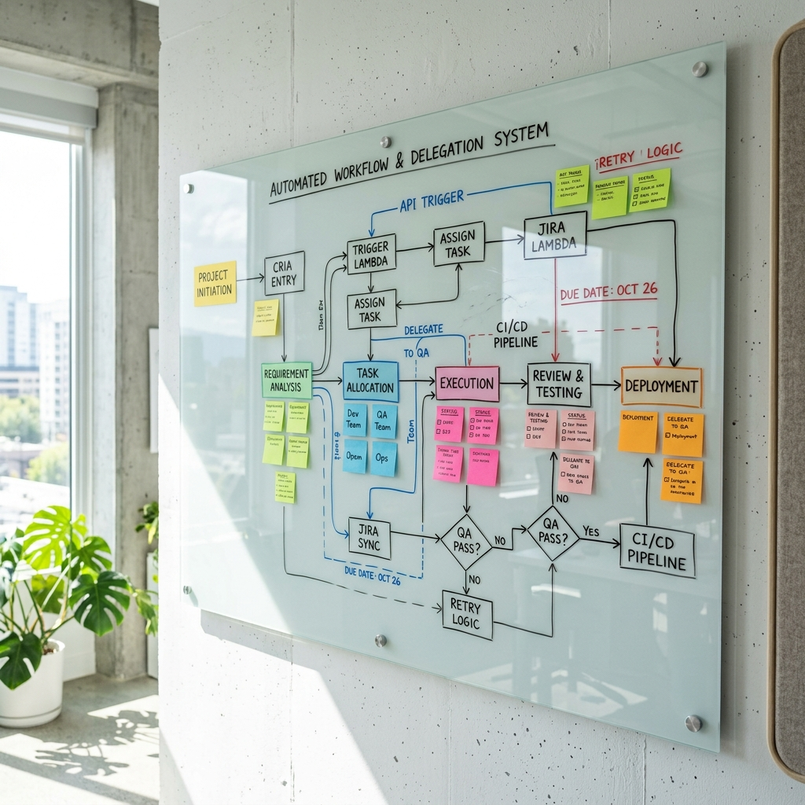

Hola a todos. Hoy quiero hablaros de algo que ha cambiado radicalmente mi forma de trabajar en este 2026. Si echamos la vista un poco atrás, nos acordaremos de cuando nos pasábamos el día "hablando" con ChatGPT, dándole instrucciones paso a paso para que nos escribiera un simple texto. Bueno, pues eso ya es historia. Hemos entrado de lleno en la era de los Agentes de IA, y os aseguro que es otro rollo.
La diferencia principal es que estos agentes ya no solo nos responden; ahora actúan. Son como esos compañeros de trabajo hiper-eficientes a los que les das una tarea compleja y se buscan la vida para resolverla sin que tengas que estar encima de ellos. Ya no hace falta pedirles que "escriban un mail"; ahora les dices: "Revisa los correos que me ha mandado este cliente, hazle una propuesta basada en nuestras nuevas tarifas, mándasela y búscame un hueco en mi calendario para reunirnos el martes". Y pam, lo hacen.
Este cambio está quitando un montón de fricción y tareas aburridas de nuestro día a día. Hoy os quiero enseñar las cinco herramientas de agentes que, para mí, están liderando este mundillo y cómo nos están haciendo la vida mucho más fácil.
1. AutoGPT v2: El todoterreno de código abierto
Si visteis la primera versión de AutoGPT hace unos años, sabréis que era súper curiosa pero fallaba más que una escopeta de feria. Pues bien, la versión 2 es una barbaridad. Lo que más me alucina es cómo coge un objetivo gigante, lo rompe en tareas pequeñitas y se pone a trabajar solo, corrigiéndose sobre la marcha si se equivoca.
Imagina que le dices: "Hazme un análisis de la competencia en el sector de la energía solar en España". El tío se pone a navegar, extrae datos, te monta un Excel, te genera unas gráficas y te manda el informe por mail. Al estar conectado con miles de APIs, es básicamente como tener a un investigador currando para ti 24/7.
2. Claude 4 Agents: El fiable de la oficina
Anthropic siempre ha sido el "empollón responsable" de la IA, muy centrados en que todo sea seguro. Y con los agentes de Claude 4 lo han clavado. Cuando delegas tareas en una empresa, lo que menos quieres es que la IA la líe mandando cosas confidenciales a quien no debe. Claude te explica paso a paso lo que va a hacer, y te deja revisarlo tranquilamente.
Pero lo que más me ha volado la cabeza es que Claude ahora "ve" tu pantalla. Si tienes un programa viejo que no se conecta con nada, Claude puede mover el ratón, hacer clic, copiar y pegar los datos... como lo harías tú. Es alucinante verlo trabajar en directo.
3. Microsoft Copilot Studio: El rey del mundo corporativo
Si tu empresa usa el ecosistema de Microsoft, Copilot Studio es una maravilla. Lo mejor es que no hace falta saber programar para montarte tu propio asistente personalizado.
Como está metido hasta las entrañas de Microsoft 365, el agente sabe quién eres y conoce tus correos y reuniones. Puedes hacerte un bot al que le digas por chat: "Me pido vacaciones la semana que viene". Y él solo comprueba si te quedan días, te aprueba la solicitud, te pone el mensaje de "Ausente" en Outlook y te bloquea el calendario para que nadie te ponga reuniones. Adiós a la burocracia pesada.
4. Google Gemini Workspace Agents: El asistente invisible
Google le ha dado una vuelta enorme a su suite. Los agentes de Gemini 3 ya no son una barrita lateral; están integrados en tus Docs, tu Gmail y tus videollamadas. Y como entienden vídeo, audio y texto a la vez, son súper versátiles.
Por ejemplo, estás en una reunión por Meet, y Gemini está ahí, "escuchando". Cuando colgais, os manda automáticamente a todos un correo con el resumen, anota quién se encarga de qué en vuestro gestor de tareas y os propone una fecha para la siguiente reunión mirando las agendas de todos. Te quita de un plumazo todo el trabajo aburrido que viene después de la reunión.
5. Zapier Central OS: El director de orquesta
Y para cerrar, no podía faltar Zapier Central. Si las otras herramientas son geniales dentro de sus propios mundos, Zapier es el puente que une todo lo demás en Internet.
A mí lo que me encanta de Zapier Central es que reacciona solo. Imagina que un cliente importante te rellena un formulario en la web a las 3 de la madrugada. El agente busca a ese cliente en LinkedIn, redacta un mail súper personalizado, le ofrece agendar una llamada con tu Calendly y avisa a tu equipo de ventas por Slack. Todo en segundos y mientras tú duermes. Brutal.
Pero... ¿Cómo hacen esto?
Es curioso ver cómo hemos pasado de los modelos antiguos, que solo sabían escupir palabras con sentido, a los agentes actuales. Ahora usan cosas llamadas "Llamadas a funciones" (Tool Use). Básicamente, cuando tú les hablas normal, ellos lo traducen a código que los programas entienden.
Además, tienen memoria. Se acuerdan de que prefieres tener reuniones por la tarde y de qué tono usas para escribir, así que cuando mandan un mail en tu nombre, suena a ti de verdad.
Preguntas que nos hacemos todos
Con todo esto, es normal que surjan dudas. Aquí os dejo las que más me comentan:
¿Nos van a quitar el trabajo estos agentes?
Más que quitárnoslo, yo lo veo como un cambio de tercio. Nos están quitando la parte más "robótica" del trabajo. Así podemos dedicar más tiempo a pensar, a tener ideas, a hablar con clientes... a esas cosas donde el tacto y la empatía humana todavía son imbatibles.
¿Qué necesito aprender ahora?
Lo más útil hoy es saber "orquestar". Es decir, coger un problema grande y saber cómo dividirlo para que la IA lo resuelva. También es clave saber revisar el trabajo que hace la máquina y tener mucha mano izquierda (inteligencia emocional) para el trato humano. El que solo sepa picar datos, lo va a tener más complicado.
¿Y qué pasa con la privacidad?
Este era mi mayor miedo, pero la cosa ha mejorado bastante. (Os hablo más a fondo de esto en mi artículo sobre privacidad y seguridad).
"Para cosas serias, como mandar presupuestos o mover dinero, siempre hay un humano que tiene que darle al botón de 'Aprobar' final. Nunca dejas a la IA completamente sola."
Además, las herramientas buenas para empresas se aseguran de que tus datos confidenciales no salgan de ahí ni se usen para entrenar a otras IAs. Así que podemos estar un poco más tranquilos.